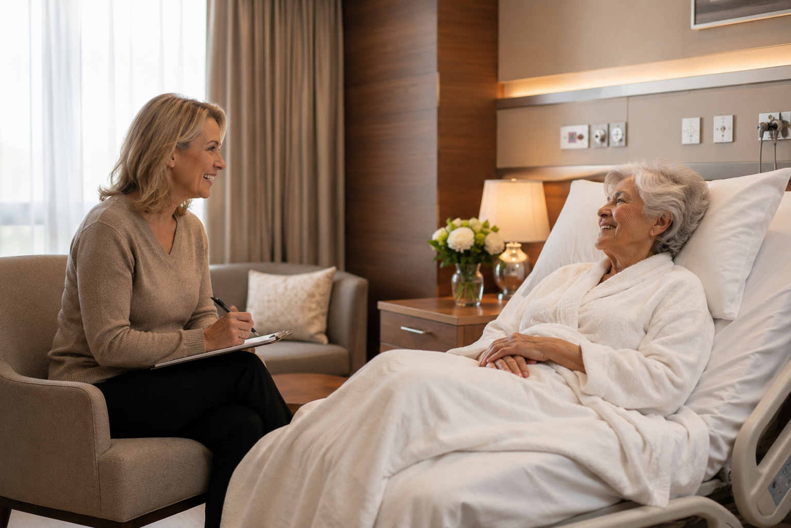

SEMPRE PERTO
 SÊNIOR
SÊNIOR
Chamar no WhatsApp
SÊNIOR
SÊNIOR
🏥 Assistência Particular e Acompanhamento Hospitalar
Passar noites em claro na poltrona de um hospital e trabalhar no dia seguinte acaba com a sua saúde e com o seu foco profissional. Deixar seus pais sozinhos gera uma preocupação enorme. Oferecemos uma presença de total confiança para cobrir esses turnos.

Permanecemos ao lado do leito na poltrona do quarto durante todo o período combinado, oferecendo uma presença humana vigilante, calma e acolhedora.
Damos ajuda firme e segura para deslocamentos até o banheiro, andando devagar e atuando junto com a equipe de enfermagem de plantão no hospital.
Acompanhamos as visitas dos médicos e anotamos de forma isenta e direta as informações do quadro de saúde para repassar sem ruídos aos familiares.
Mantemos você atualizado com avisos simples e periódicos pelo WhatsApp. Assim, você consegue dormir em casa ou cumprir o trabalho sabendo que eles estão protegidos.
Reforçamos com total clareza que a Sempre Perto realiza um suporte de companhia humana e hospitalidade social. **Não fazemos procedimentos de enfermagem**, curativos, trocas de sondas ou ministração de remédios. Nosso trabalho dá conforto e sustentação ao idoso, mantendo a responsabilidade técnica de saúde totalmente com os médicos e enfermeiros do hospital.
Entender as Regras Técnicas no WhatsAppSeguimos uma regra clara de **passagem de plantão ao lado do leito**. O profissional que assume o próximo turno chega com antecedência, confere as anotações do dia e conversa com a enfermagem do hospital antes de assumir a poltrona. O idoso nunca fica desamparado.
O serviço é combinado diretamente com a nossa coordenação de campo por meio de turnos planejados. O fechamento é realizado de forma transparente com base nas horas dedicadas à cobertura do quarto, permitindo que você monte a retaguarda exata que a sua família precisa para descansar.